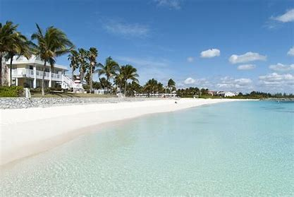

Home George Town. Dunmore Town. Freeport. Grand Bahama. Blue Lagoon Island.
Grand Bahama is the northernmost of the islands of The Bahamas. It is the third largest island in The Bahamas island chain of approximately 700 islands and 2,400 cays. The island is roughly 530 square miles (1,400 km2) in area and approximately 153 kilometres (95 miles) long west to east and 24 kilometres (15 miles) at its widest point north to south. Its westernmost town, West End, is located 56 nautical miles (64 miles; 104 km) east of Palm Beach, Florida. Administratively, the island consists of the Freeport Bonded Area and the districts of East Grand Bahama and West Grand Bahama. Nearly half of the homes on the island were damaged or destroyed in early September 2019 by Hurricane Dorian.
Freeport, famous for its vibrant nature, beautiful beaches, and captivating sights to see, is a must-visit for all Bahamas visitors. It's a nature lovers paradise, surrounded by lush grass and tall palm trees as far as the eye can see.
